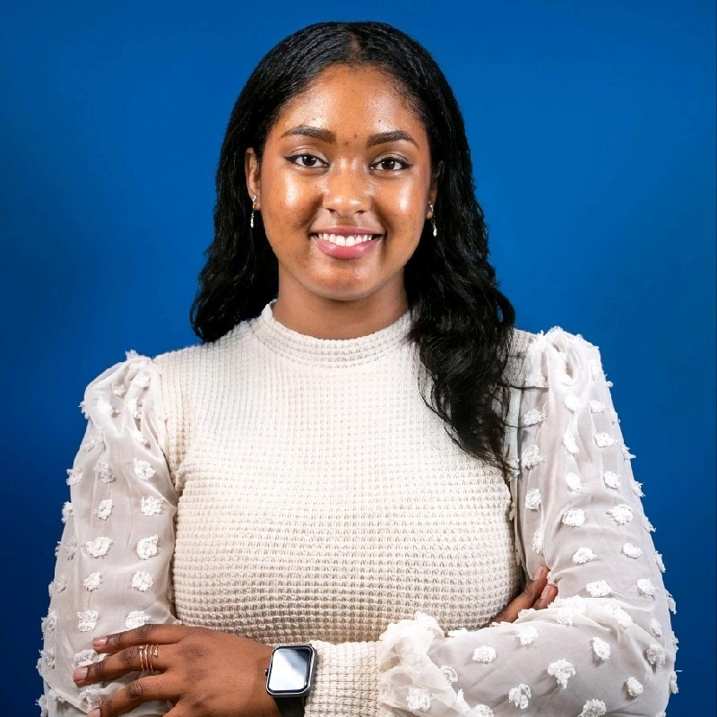

Andrewlyn Gooden
Web Developer
Email: andrewlyncg@gmail.com
Telephone: 876-850-9556 / 437-255-9464
SUMMARY OF QUALIFICATIONS
Reliable, passionate achiever who has excelled in various positions as a Supervisor, Consultant, Account Manager. Career Services Coordinator, Communication and Marketing Specialist, and Government Personnel for over 6 years.
Proudest accomplishment was the successful management and development of specialized systems for the maintenance and compliance of Special Economic Zones by building deep relationships with client executives in over 190+ companies.
Ready to do whatever it takes to deliver results and drive revenues.
TECHNICAL AND SPECIAL SKILLS
- QuickBooks, Microsoft Office/ Office 365, Teleconference Platforms and Photoshop
- Python, HTML, CSS and Javascript
- Policy creation, databaset management and data analysis
- Problem Solving, Leadership and Event Management Skills
- Excellent interpersonal skills and the ability to relate well with people at all levels.
- Leadership, planning, organizing and time management skills.
WORK EXPERIENCE
Career Services Coordinator (GUS Canada / Niagara College - Toronto)
- Database manager for student based data and research for current and past students to improve the services of the colege.
- Manager of interns and team through training, payroll, performance reviews and reporting.
- Conducted key administrative duties such as budget management, leave forms, agendas, and transcriptions of minutes for meetings, and planning and coordination of orientation of new staff.
- Lead of the department’s communication and marketing strategies including logos design, department monthly newsletter, email marketing and digital and physical advertisement
- Project Manager for numerous student and employer meetings for the 2022 and 2023 Job Fair events, which hosted over 1500 people.
- Highly trained personnel in customer service, database management, communication, coaching, and strategic direction of the team.
Career Services Assistant (GUS Canada / Toronto School of Management)
- Designed and published two student-based courses for 2000 co-operative education students and enhanced the company website and student resources.
- Trained and instigated the hiring process of over 1000 new students to the Canadian Job Market.
- Front line representative for all client, employer, and student inquiries for the department.
- Conducted career consultation for enrolled and alumni students.
- Performed academic and administrative review of student-based work and capstone projects to allow the graduation of students.
Applications Case File Specialist (Jamaica Special Economic Zone Authority)
- Database maneger, data analyist and administrative officer responsible for reviewing applications and enacting finalization of the certification for tax free zones within the country.
- Significantly increased Customer Satisfaction survey response rate by 385% by establishing and executing social media plans and content creation strategies, increasing online interactions of over 77%.
- Account Manager focused on success of companies engaged with services provide.
- Lead trainer for interns in areas such as customer service, database management, creation of legal documents, communication, coaching, and strategic direction of the Business Contracting Services.
- Moderator and planner for selected presentations for the International World Free Zone Conference 2021, Including directed creation of storyboard, scripts, production set and other areas of the event.
- Key organizer and secretariat to numerous clientele and partnership meetings, locally and internationally.
Communication Specialist (The Pan American Health Organization)
- Executed and designed the National Communication Plan and Commercial on Health Awareness in collaboration with the Minister and Ministry of Health and Wellness which aired on national Television, radio, and social media.
- Spearheaded bi-monthly communication and health reports for the PAHO/WHO Representative and secretariat to numerous clientele and partnership meetings.
- Headed the Fire Prevention and Control Inhouse Campaign focusing on fire prevention and control.
- Successfully completed updated fire certification of the premises, coordinated 3 sensitization sessions with creation of Fire exist signs, infographics, and other informational material.
- Management of the Caribbean region’s graphic content and social media platforms.
EDUCATION
- Master of Science in Data Science (The University of East London)
- Bachelor of Arts in Integrated Marketing Communication (The University of the West Indies)
- Postgraduate Diploma in Business Management (Toronto School of Management)
- Associate degree in Humanities (Knox College)